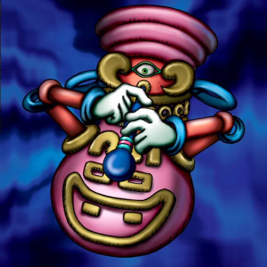

Pot the Trick

Description: "When this card is flipped face-up, your spellbound cards are freed and can move in the following turn."
STATS
ATK: 400
DEF: 400DECK COST
Deck Cost per Card: 13EFFECT NOT IMPLEMENTED
Fusion List (50 Possible Fusions)
- Pot the Trick + Ancient Elf = Mystical Sand
- Pot the Trick + Ancient Sorcerer = Ushi Oni
- Pot the Trick + Fairywitch = Mystical Sand
- Pot the Trick + Armaill = Minomushi Warrior
- Pot the Trick + Baby Dragon = Stone D.
- Pot the Trick + Blackland Fire Dragon = Stone D.
- Pot the Trick + Curtain of the Dark Ones = Ushi Oni
- Pot the Trick + Dancing Elf = Mystical Sand
- Pot the Trick + Darkfire Dragon = Stone D.
- Pot the Trick + Dragon Statue = Stone D.
- Pot the Trick + Dragon Zombie = Stone D.
- Pot the Trick + Fiend's Hand = Stone Ghost
- Pot the Trick + Fire Eye = Dissolverock
- Pot the Trick + Fire Reaper = Stone Ghost
- Pot the Trick + Firegrass = Dissolverock
- Pot the Trick + Flame Ghost = Stone Ghost
- Pot the Trick + Flame Snake = Dissolverock
- Pot the Trick + Goddess with the Third Eye = Mystical Sand
- Pot the Trick + Hard Armor = Minomushi Warrior
- Pot the Trick + Kagemusha of the Blue Flame = Minomushi Warrior
- Pot the Trick + Kageningen = Minomushi Warrior
- Pot the Trick + Key Mace = Mystical Sand
- Pot the Trick + Koumori Dragon = Stone D.
- Pot the Trick + Lesser Dragon = Stone D.
- Pot the Trick + Lunar Queen Elzaim = Mystical Sand
- Pot the Trick + M-Warrior #1 = Minomushi Warrior
- Pot the Trick + Mech Mole Zombie = Stone Ghost
- Pot the Trick + Monsturtle = Boulder Tortoise
- Pot the Trick + Mystic Lamp = Ushi Oni
- Pot the Trick + Nemuriko = Mystical Sand
- Pot the Trick + Petit Dragon = Stone D.
- Pot the Trick + Phantom Dewan = Ushi Oni
- Pot the Trick + Princess of Tsurugi = Mystical Sand
- Pot the Trick + Queen's Double = Mystical Sand
- Pot the Trick + Queen of Autumn Leaves = Mystical Sand
- Pot the Trick + Sectarian of Secrets = Ushi Oni
- Pot the Trick + Shadow Specter = Stone Ghost
- Pot the Trick + Skelgon = Stone D.
- Pot the Trick + Skull Servant = Stone Ghost
- Pot the Trick + Swordsman from a Foreign Land = Minomushi Warrior
- Pot the Trick + The Little Swordsman of Aile = Minomushi Warrior
- Pot the Trick + The Wandering Doomed = Stone Ghost
- Pot the Trick + Trap Master = Minomushi Warrior
- Pot the Trick + Unknown Warrior of Fiend = Minomushi Warrior
- Pot the Trick + Vishwar Randi = Mystical Sand
- Pot the Trick + Waterdragon Fairy = Mystical Sand
- Pot the Trick + Wicked Dragon with the Ersatz Head = Stone D.
- Pot the Trick + Witch of the Black Forest = Mystical Sand
- Pot the Trick + Wood Clown = Minomushi Warrior
- Pot the Trick + Yamatano Dragon Scroll = Stone D.